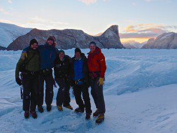
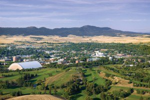

I am always interested in having motivated graduate students join my research group.


My research group at the University of Idaho works to understand the processes that control glacier and ice sheet motion and mass loss. Tidewater glacier dynamics, glacier hydrology, and glacier seismicity are particular focuses of our ongoing research. We draw on our knowledge of physical, glaciological processes and a variety of field-based and remote sensing methods to better understand how glaciers work.
Students will be supported (tuition, fees and stipend) via a Research and/or Teaching Assistantship. The successful applicant will have the opportunity to work with a variety of exciting new data sets, such as seismic or terrestrial radar data, that offer high resolution views of glacier processes. Projects working with satellite or airborne data quantify glacier processes at broad spatial scales. Brief summaries of potential projects with data from Greenland and Alaska are below. In addition, group members will have the opportunity to participate in glaciological field work at glaciers on the Cascade Range volcanoes or within the northern Rocky Mountains, sites all within several hours drive of the University in Moscow, Idaho.


Students working in our group have the opportunity to receive degrees in the Department of Earth and Spatial Sciences, or an interdisciplinary program such as Water Resources. Faculty at UI have existing strengths in geophysics, climate science, Earth surface processes, remote sensing, and spatial analysis and statistics. Incoming students will join approximately 40 other graduate students working on Earth science questions in the Departments of Geography and Geology. Moscow, ID, is in the Idaho panhandle, between the foothills of the Rocky Mountains and the beautiful Palouse hills. Moscow is a great, small town, with a vibrant, walkable, main street and is quite affordable (monthly rents for 2 bedroom apts near campus are ~$500). Students and other Moscow residents enjoy a wide range of outdoor activities that are all within striking distance for day, weekend and longer trips.
Prospective students with strong quantitative backgrounds and coursework in math, physics, geology and/or geography will be well prepared. Scientific computing is a valuable tool for all our research and experience with programming languages such as Matlab, Python, or R will be a significant help, but is not required. We actively seek members from a diversity of backgrounds, particularly those underrepresented in the sciences. Applicants should email Tim with a short expression of interest and overview of their background to discuss opportunities. Learn more about applying to the UI Department of Earth and Spatial Sciences here.